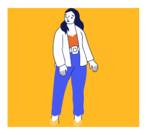
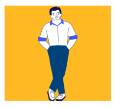
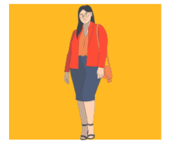

La postura y los movimientos corporales hablan de confianza y
presencia en la comunicación, creando una coreografía única para cada interacción.
Movimientos corporales
Son desplazamientos espaciales que se realizan con el cuerpo,
donde está implicada la educación y cómo la persona emplea la comunicación no verbal
a través de él.
características: 1. A nivel físico está relacionado con la respiración y la autorregulación muscular. 2. A nivel psicológico tiene que ver con las emociones, las relaciones, el control y la precisión. 3. Refleja cómo la persona se organiza y planifica. 4. Se refleja el impacto que uno tiene en el mundo.
Posturas
Clave del lenguaje no verbal, el cual ayuda a expresar distintas
emociones, pensamientos e intenciones que ayudan a la comunicación.
características: 1. Las posturas ayudan a la mejor compresión de nuestra comunicación no verbal. 2. Comunicación sin palabras. 3. Atención e interés.
Tipos de posturas:

Postura abierta
Confianza, receptividad y disposición para la
interacción. Se distingue por loa brazos abiertos o piernas separadas.
Postura cerrada
La persona puede estar cerrada a la comunicación o
sentirse insegura. Se distingue por los brazos cruzados o piernas cruzadas.
Postura erguida
Indica seguridad en sí mismo (autoconfianza).
Se distingue por la espalda recta, hombros hacia atrás.
Postura encorvada
La persona podría sentirse desanimada o insegura. Se
distingue por los hombros caídos, espalda encorvada.

Manos en los bolsillos
Puede asociarse al nerviosismo aunque también a
actitud relajada o, en algunos casos, una falta de interés.
Manos en la cadera
La persona puede estar lista para tener confianza o
incluso una actitud dominante.

No visual
Asociado a la timidez, puede verse como falta de
confianza, ansiedad o deshonestidad.
Visual firme
Puede mostrar interés y conexión con la otra persona,
además de confianza y sinceridad.
Emmanuel-Vannesa-Pilar. (2024). Exposición 3:Movimientos corporales y posturas. Nezahualcóyotl: Clase de Expresión Oral y Escrita II.
Navarro, P. B. (30 de Octubre de 2023). Tipos de movimientos del cuerpo humano. Obtenido de kenhub.com: https://www.kenhub.com/es/library/anatomia-es/tipos-de-movimientos-del-cuerpo-humano